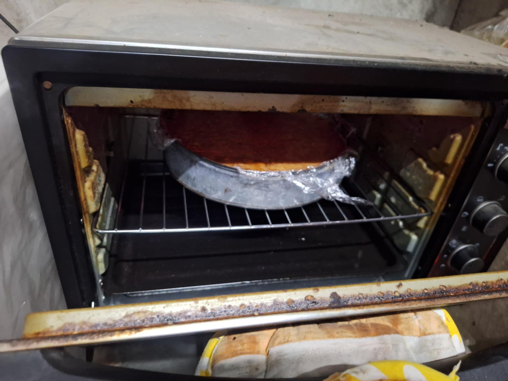
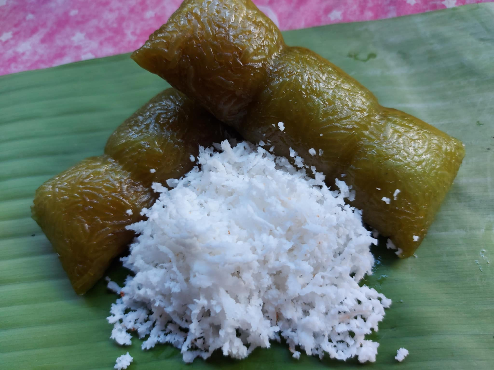

History of Business
Our business started with a joke of making afternoon snacks, in 2018. My husband was excited and told me, what if we try to make this a business, it will definitely be a hit. I started with small snacks like, putong puti, kutsinta, suman, espasol, leche flan, ginataang mais, biko because it is easy to make. I watched tutorials on YouTube to try other snacks, also because with the help of my mother, I learned to make new ones and that is the different types of bibingka, bibingkang kanin, bibingkang pinipig, and bibingkang kamoteng kahoy. It was Christmas and I tried to order using my Facebook.
I posted videos of the bibingkang we were making while mixing it, and I also posted pictures of it being plated. After making the orders, we delivered it to whoever ordered it. We still remember that only close friends and siblings ordered from us back then, in 2018.
My husband and I were happy and realized that the profit from the food business was huge, so I studied again to make other types of puto such as, sapin sapin, maja mais, maja ube, ubeng may sabaw, ube na may latik, biringhi, palitaw, etc. It was Christmas again, and I did what I did before, ordering. This time there were quite a few people who ordered from us, we almost couldn't eat because we were so tired. It was just my husband and I who made the orders, only the two of us working together that time. Thank God because we finished it. And after that again, we deliver it to those who order. Our business has continued to thrive until now. Thank you to my wife, cousin, and my mother because they pushed me to continue in this business.

